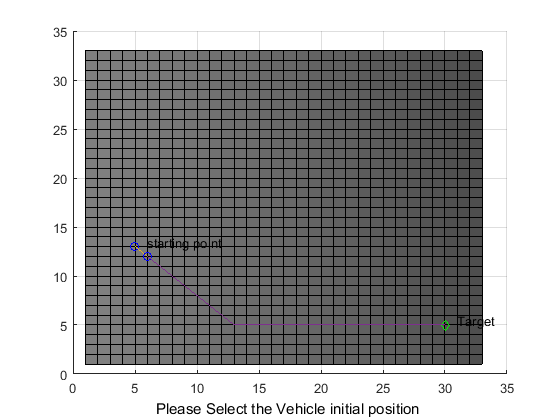

R1 = 0;
C1 = 0;
C2 = 2;
R2 = 9999;
while(R2<12435501)
map_triplet = csvread('E:\team indus\2016\dem.csv',R1,C1,[R1 C1 R2 C2]);
num = size(map_triplet);
R1 = R2;
R2 = R2 + num(:,1);
unit_block = 150;
for a = 1:num(:,1)
map_triplet(a,1) = 360 + map_triplet(a,1);
end
F = scatteredInterpolant(map_triplet(:,1), map_triplet(:,2), map_triplet(:,3));
max_Long = max(map_triplet(:,1));
min_Long = min(map_triplet(:,1));
max_Lat = max(map_triplet(:,2));
min_Lat = min(map_triplet(:,2));
x = min_Long:((max_Long-min_Long)/haversine(max_Long, min_Long, min_Lat, min_Lat)*unit_block):max_Long;
y = min_Lat:((max_Lat-min_Lat)/haversine(max_Long, min_Long, min_Lat, min_Lat)*unit_block):max_Lat;
[~, MAX_X] = size(x);
[~, MAX_Y] = size(y);
map = ones(MAX_X, MAX_Y);
for a = 1:MAX_X
for b = 1:MAX_Y
map(a,b) = F(x(1,a), y(1,b));
coor_map(a,1) = x(1,a);
coor_map(b,2) = y(1,b);
end
end
phi = 45;
theta = 30;
grid on;
hold on;
pcolor(map')
colormap(gray(2000))
pause(1);
h=msgbox('Please Select the Target using the Left Mouse button');
if ishandle(h) == 1
delete(h);
end
xlabel('Please Select the Target using the Left Mouse button','Color','black');
but=0;
while (but ~= 1)
[xval,yval,but]=ginput(1);
end
xval=floor(xval);
yval=floor(yval);
xTarget=xval;
yTarget=yval;

Error using ginput (line 84)
Interrupted by figure deletion
Error in main (line 71)
[xval,yval,but]=ginput(1);
plot(xval,yval,'gd');
text(xval+1,yval+.5,'Target')
pause(1);
h=msgbox('Please Select the vehicle initial position using the Left Mouse button');
uiwait(h,5);
if ishandle(h) == 1
delete(h);
end
xlabel('Please Select the Vehicle initial position ','Color','black');
but=0;
while (but ~= 1)
[xval,yval,but]=ginput(1);
xval=floor(xval);
yval=floor(yval);
end
xStart=xval;
yStart=yval;
plot(xval,yval,'bo');
text(xval+1,yval+.5,'starting point');
RESTRICTED=[];
OPENList=[];
TRAVERSED=[];
OPTIMUM=[];
Node=[xStart, yStart];
Prev=Node;
Raised = [-1,-1];
num_trav = 0;
num_opt = 0;
deadlock = 0;
Target = [xTarget, yTarget];
while (Node(:,1)~=Target(:,1)) || (Node(:,2)~=Target(:,2))
OPENList = openNodes(Node, Prev, Raised, RESTRICTED, TRAVERSED, MAX_X, MAX_Y);
sz = size(OPENList);
Prev = Node;
if sz(:,1)~=0
num_opt = num_opt+1;
OPTIMUM(num_opt,:) = Node;
Node = nextPoint(OPENList, Node, Target, coor_map, phi, map);
OPENList=[];
elseif num_trav>0 && sz(:,1)==0
Node = OPTIMUM(num_opt,:);
OPTIMUM(num_opt,:) = [];
num_opt = num_opt - 1;
else
h=msgbox('Sorry, No path exists to the Target!','warn');
uiwait(h,5);
break;
end
num_trav = num_trav +1;
TRAVERSED(num_trav,:) = Node;
end
j=size(OPTIMUM,1);
if ( (Node(:,1) == Target(:,1)) && (Node(:,2) == Target(:,2)) )
j=size(OPTIMUM,1);
p=plot(OPTIMUM(j,1),OPTIMUM(j,2),'bo');
j=j-1;
for i=j:-1:1
pause(.005);
set(p,'XData',OPTIMUM(i,1),'YData',OPTIMUM(i,2));
drawnow;
end;
plot(OPTIMUM(:,1),OPTIMUM(:,2));
hold on;
p=plot(TRAVERSED(j,1),TRAVERSED(j,2),'bo');
j=j-1;
for i=j:-1:1
pause(.005);
set(p,'XData',TRAVERSED(i,1),'YData',TRAVERSED(i,2));
drawnow ;
end;
plot(TRAVERSED(:,1),TRAVERSED(:,2));
else
pause(1);
h=msgbox('Sorry, No path exists to the Target!','warn');
uiwait(h,5);
end

end